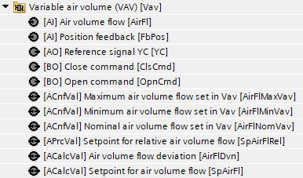
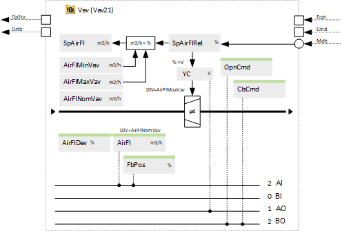
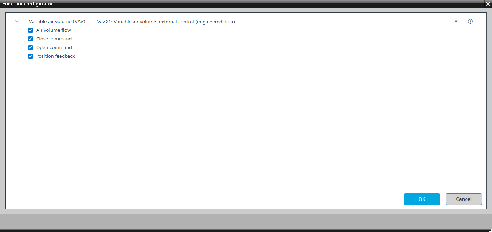

[Vav21] Variable air volume, external control
Program block, name / node subtype: [Vav21] Variable air volume, external control
Library hierarchy: Ventilation and air conditioning equipment
Family: Vav
Project tree | Diagram |
|---|---|
|
 |  |
Configurator


Program blocks are stored in the library without I/Os. Use the auto-create and auto-connect functions to create I/Os and/or to connect them to the interface blocks, e.g., R_A, CMD_B. Alternatively, take the I/Os from the folder containing the predefined I/Os in the library and/or from the plant and connect them to the interface blocks.
Function
Controls a VAV damper with external control.
Sends a reference signal (in V) and displays a relative setpoint (in %) for the air volume flow to the VAV damper.
External control (from the point of view of the PXC4/5/7): The VAV damper has its own control unit and the volume flow control of the control unit of the damper. It measures the volume flow and modulates a damper position to control the air volume flow.
The minimum, maximum, and nominal air volume flows in VAV represent the values set in its own control unit. The minimum and maximum air volume flows are used to calculate the absolute setpoint in m3/h.
A parameter in the program (0..10V or 2..10V) defines the range of the reference and feedback signals (air flow or position).
A parameter in the program defines the behavior of Cmd = 0 (closed or minimum volume flow). Another parameter in the program defines the reference signal value for Cmd = 0.
Optional functions
This program block has the following optional functions:
Option: Air volume flow (1xAI)
Reads and displays the current air volume flow from the control unit of the VAV damper.
A calculated value shows an air volume flow deviation (percentage of undersupply that indicates that the air volume flow cannot reach the setpoint even if the damper is fully open).
The air volume flow deviation can be used for fan speed optimization.
Option: Close command (1xBO)
Forces the VAV damper to close (and not to stay at minimum air volume flow when there is no setpoint, if it is configured in that way).
Option: Open command (1xBO)
Forces the VAV damper to go to the maximum air volume flow.
Option: Position feedback (1xAI)
Reads the position of the damper.
Mandatory elements
Name | Description | Type | Alarm / Notification class | Trend / Type | |
|---|---|---|---|---|---|
|
YC | Reference signal YC | AO: Analog output | No | Yes, 2 | |
SpAirFlRel | Setpoint for relative air volume flow | APrcVal: Analog process value | No | No | |
SpAirFl | Setpoint for air volume flow | ACalcVal: Analog calculated value | No | No | |
AirFlNomVav | Nominal air volume flow set in VAV | ACnfVal: Analog configuration value | No | Yes, 4 | |
AirFlMinVav | Minimum air volume flow set in VAV | ACnfVal: Analog configuration value | No | Yes, 4 | |
AirFlMaxVav | Maximum air volume flow set in VAV | ACnfVal: Analog configuration value | No | Yes, 4 | |
Optional elements
Name | Description | Type | Alarm / Notification class | Trend / Type | |
|---|---|---|---|---|---|
|
AirFl | Air volume flow | AI: Analog input | No | Yes, 2 | |
Further elements that belong to this element: AirFlDvn | Air volume flow deviation | ACalcVal: Analog calculated value | No | No | |||||
FbPos | Position feedback | AI: Analog input | No | Yes, 2 | |
ClsCmd | Close command | BO: Binary output | No | Yes, 4 | |
OpnCmd | Open command | BO: Binary output | No | Yes, 4 | |